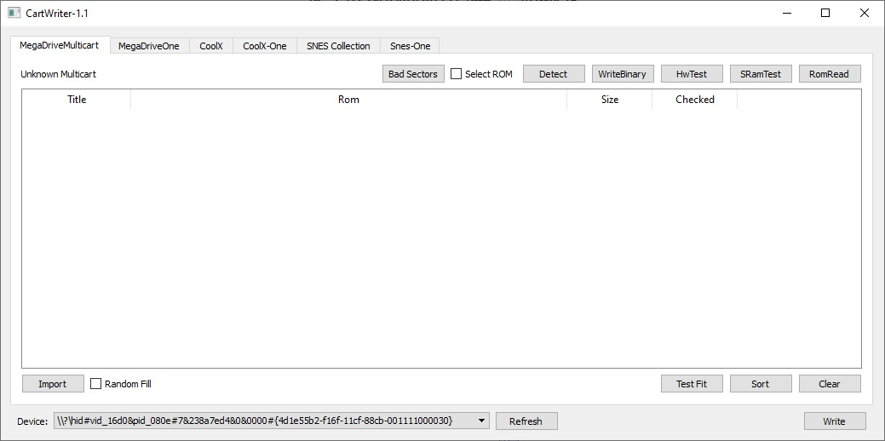

CartWriter
CartWriter дозволяє записувати багатогровки, багатогравки на 3 платформи: Famicom (Dendy), Sega Genesis, SNES.
Записувати можна тільки картриджі мого виробництва!
Підключення до комп'ютера здійснюється за допомогою кабелю micro USB, бажано використовувати максимально короткий кабель, оскільки при використанні довгого кабелю просідає напруга, що може призвести до збоїв.
Кнопка - дозволяє зробити скидання, після деяких помилок необхідно її натиснути або переткнути кабель micro USB.
Зелений світлодіод - сигналізує про активність передачі даних USB. Якщо в процесі роботи блимає, значить все гаразд.
Синій світлодіод - візуалізує біт даних під час спілкування з картриджем.
Червоний світлодіод - візуалізує стан контакту "запис", не плутати з режимом запису.
Роз'єм ISP - використовується для перепрошивки CartWriter пристрою.
Картриджі необхідно встановлювати картинкою вперед (спрямованою на світлодіоди), або сторона плати з підписом "Front Side" повинна дивитися на світлодіоди.
Famicom/Dendy:
Sega Genesis/MegaDrive:

SNES:

Остання версія софту: CartWriter-1.1
Основне вікно програми:

Якщо ви підключили пристрій перед запуском програми, пристрій повинен автоматично визначитися (нижня частина вікна Device:), інакше потрібно натиснути на кнопку Refresh внизу вікна.
У верхній частині вікна можна вибрати одну з шести вкладок - тип картриджа:
MegaDriveMulticart - багатогровка SegaGenesis/MegaDrive
MegaDriveOne - одногровка SegaGenesis/MegaDrive
CoolX - багатогровка Famicom/Денді
CoolX-One - одногровка Famicom/Денді
Snes Collection - багатогровка SNES (не готове)
Snes One - одногровка SNES
Одногровка Famicom/Dendy
На одногровці розташовані 4 чіпи пам'яті, 2 флеші по 512КБ і 2 оперативної пам'яті, щоб покрити практично всі типи маперів. Для запису необхідно переключити програму на вкладку CoolX-One, а потім перетягнути один або декілька ромів гри.
Мапер, а також конфігурація пам'яті має збігатися. Якщо гра використовує 128КБ програмної пам'яті та 128КБ відеопам'яті, то можна буде записати 4 гри (512/128 = 4), перемикати які можна буде за допомогою кнопки Reset на консолі.

Якщо задній фон став зеленим, значить неможливо додати більше ігор. Видалити гру зі списку можна, натиснувши кнопку Delete навпроти гри.

Якщо гра не підтримується, або неправильна конфігурація маперів, тоді задній план буде підсвічений червоним.
Ціна пристрою 500грн.
Зв'язатися зі мною можна по Viber, Telegram, Телефон +380992028599 Кузнєцов Євген
Надсилання: Нова Пошта/Укрпошта. Оплата: накладний платіж/Приват